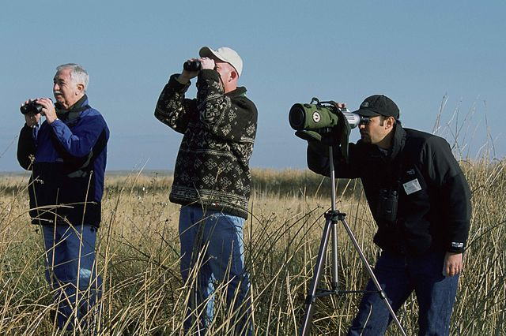

Birdwatching al Gran Paradiso
Il Parco Nazionale del Gran Paradiso è un paradiso per gli amanti del birdwatching. Qui puoi osservare aquile reali, gipeti, e rapaci alpini che solcano i cieli, oltre a specie migratorie rare. I punti di osservazione si trovano lungo i sentieri più tranquilli del parco.
